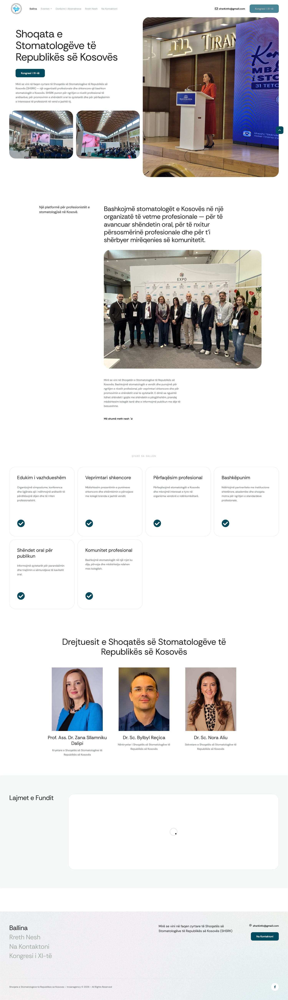
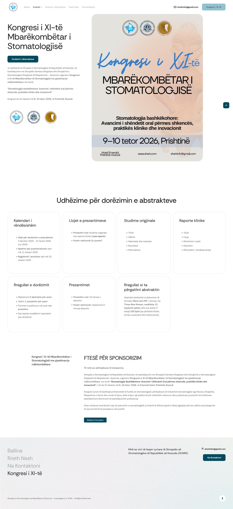
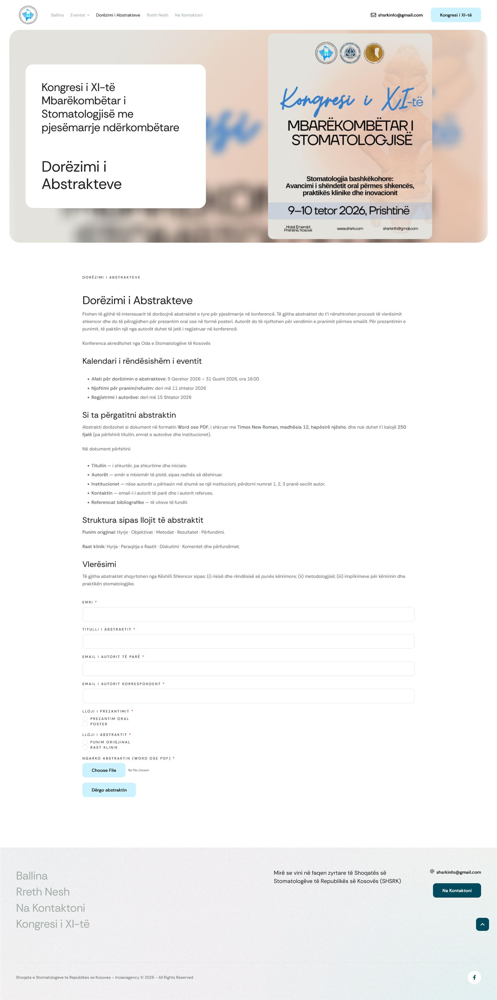
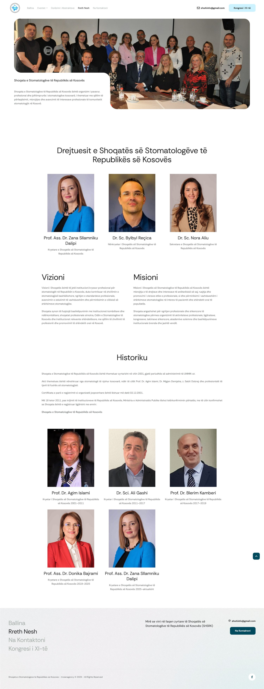
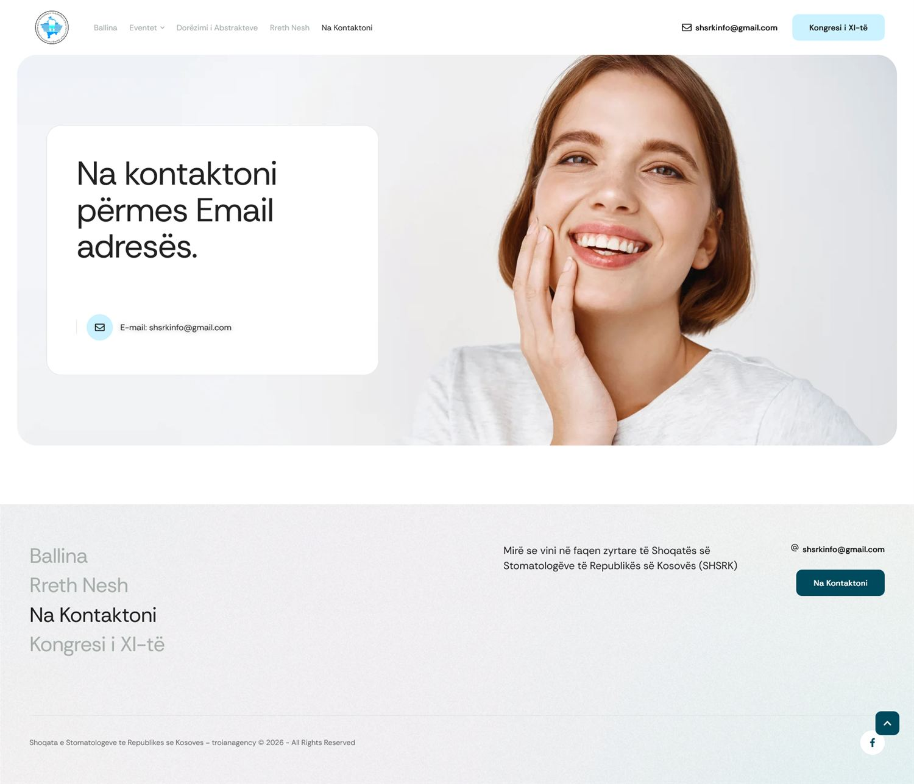

Client
SHSRK — Dental Association of Kosovo
An institutional website for the Dental Association of the Republic of Kosovo (Shoqata e Stomatologëve të Republikës së Kosovës) — the professional voice of Kosovo's dentists — including its national congress and scientific abstract submissions.

Open full ↗SHSRK is the professional body representing dentists across Kosovo. It needed an authoritative, trustworthy online home — one that presents the association credibly, communicates with its members, and supports its flagship event: the national dental congress, complete with scientific abstract submissions.
We delivered a clean, accessible, mobile-first website that organizes a fair amount of content clearly and reads professionally on any device.
A credible home for the association — its mission, leadership and role as the professional voice of Kosovo's dentists.
A dedicated section for the national congress (11th edition) — programme, details and participation information.
A clear pathway for researchers and practitioners to submit scientific abstracts for the congress.
Straightforward contact and information so members and the public can reach the association easily.

Open ↗
Open ↗
Open ↗
Open ↗We build clear, credible, accessible websites end to end. Tell us about your project.